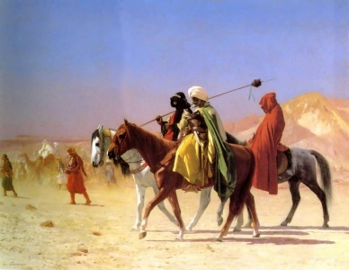

Sacred Texts Islam
Buy this Book at Amazon.com
|
 Arabs Crossing the Desert, by Jean-Leon Gerome [19th Cent.] (Public Domain Image) |
Arabian Poetryby W.A. Clouston[1881] |
Ibn Altalmith was expiring when his son approached his bed, and inquired whether there was anything he wished for. Upon which the old man in a faint voice exclaimed: 'I only wish that I could wish for anything!'--p. 435.
This is an anthology of 19th century Orientalist translations of Arabian poetry, many of which are very rare, as is this particular book. Most of the included works either predated Muhammed or were contemporary, so there are many fascinating bits of pre-Islamic lore. Included is the Moallakat, or the 'Hanged' Poems, a collection of seven pre-Islamic poets whose works were once displayed (i.e. 'hanged') in the Ka'ba. Another highlight is a synopsis of the 'Romance of Antar,' an oral saga of a brave prince of old Arabia, and many deeds of derring-do. The one downside here is all of the variant ways of transliterating Arabic words, which probably will take an specialist in Arabic literature to sort out.